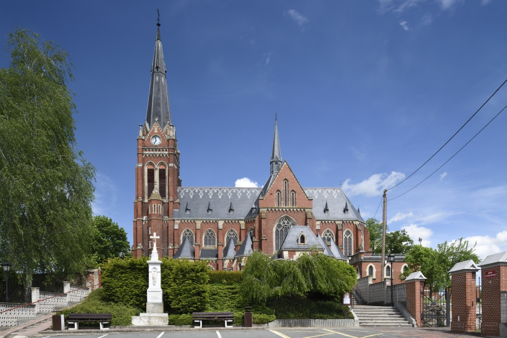
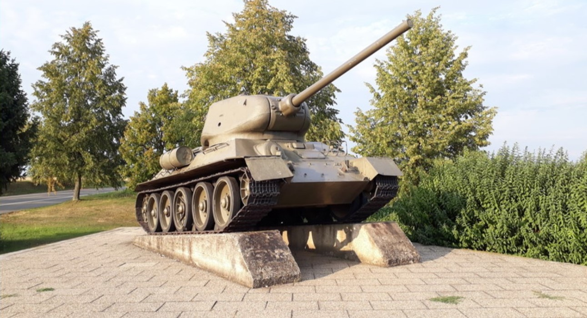
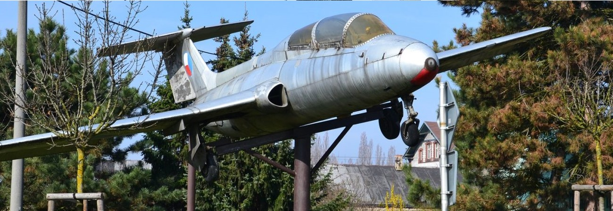

Zajímavá místa v obci
Kostel sv. Jana Křtitele
Původní dřevěný kostelík byl v polovině 19. st. přebudován, jeho využívání bylo ukončeno požárem. Nový kostel byl dokončený v r. 1906. Postavený byl v novogotické stylu stavitelem J. Seyfriedem z Kravař a vysvěcen na farní kostel sv. Jana Křtitele.
Pomník tanku
Památník připomíná historickou událost 2. světové války, kdy dne 15. dubna 1945 v 10:30 hodin nedaleko odtud překročila hranici Československa 1. československá samostatná tanková brigáda patřící do 1. československého armádního sboru v Sovětském svazu, která byla součástí 38. armády Sovětského svazu.
Památník letadla
Letadla mají v obci již svou tradici. První zde bylo umístěno již roku 1965, v rámci oslav 20. výročí osvobození. Jednalo se o JAK11, známý taky jako C11. Byl to výcvikový letoun vyvinutý v Rusku v roce 1947. Dnes je umístěn v Kunovicích u Uherského Hradiště v muzeu místního aeroklubu.